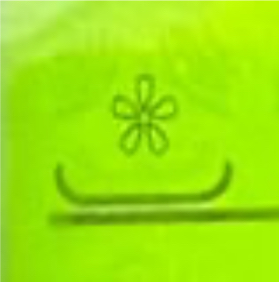
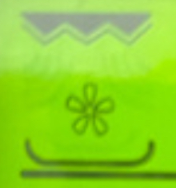
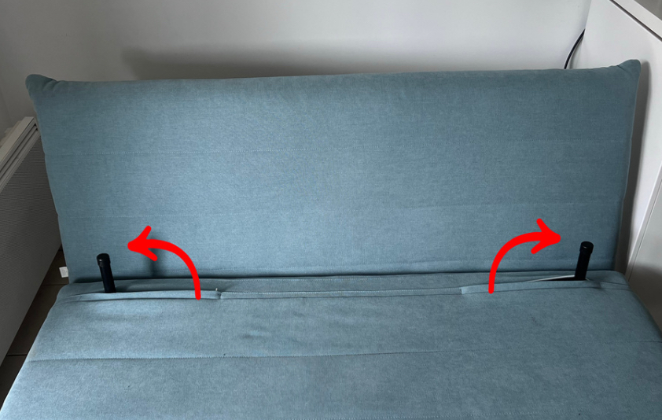
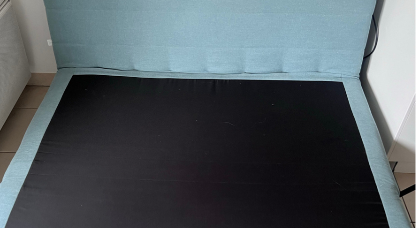
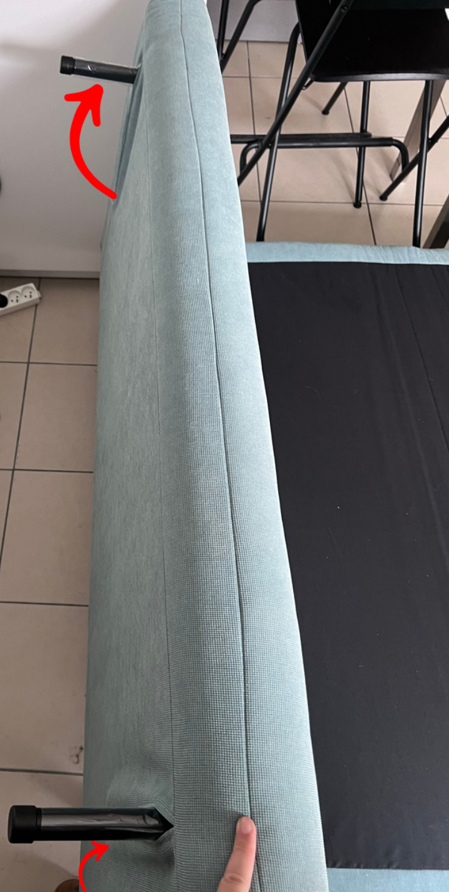

Machine à laver
Vous trouverez le mode d’emploi complet en cliquant sur le bouton ci-dessous :
Mode d’emploiMicro-ondes
Vous trouverez le mode d’emploi complet en cliquant sur le bouton ci-dessous :
Mode d’emploiAppuyez sur la touche Manual pour sélectionner une des fonctions, réglez la puissance avec la touche Watts ou la température avec C°, puis le temps avec + / –. Appuyez sur Start.

Four chaleur pulse
Micro-ondes
Grill

Grill + Four
Canapé-lit
Voici les étapes pour déplier le canapé-lit :
Tirez les poignées vers l’extérieur de chaque côté pour débloquer le dossier.
Relevez l’assise vers l’avant pour déplier la structure.
Abaissez le dossier à plat pour finaliser le couchage.